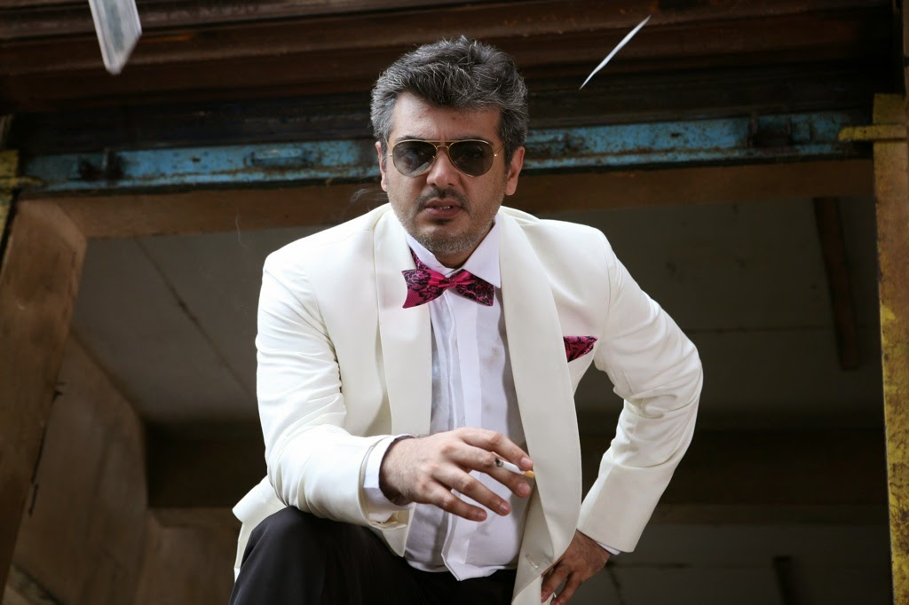

Information Technology
About the department

The field of information technology covers the design, administration and support of computer and telecommunications systems. The IT Department had its inception in the year 2010 with the UG programme, having 60 as the sanctioned intake of students. The department holds energetic and dynamic faculty who constantly update their knowledge and skills through various quality improvement programs. The department transforms the students into young professional equipped with valuable skills for their career development. This programme is an integration of classroom and laboratory learning .This course aids in acquiring practical knowledge; striking a balance between the basics of engineering science and the applications in the real circumstances. Every possible state – of –the –art facilities and design tools are given to the students to carry out their projects. Intensive laboratory assignments are given in order to gain significant experience. The Department emphasizes on Domain Specific Applications such as – Networks, Information Security, Software Engineering, Operating Systems, Database Management Systems, Image Processing, Cloud Computing, Mobile Applications, Network Security Tools etc. to facilitate acquiring higher degree of knowledge, global competency and excellence, for the betterment of the society.
About Us
Vision
To build proficient Information Technologists through moral, ethical and technological standards for the societal well-being.
Mission
• To provide a practice oriented methodology with access to contemporary knowledge in IT for the betterment of the society.
• To prepare students for competent careers in information technology through innovation, team spirit, ethics and entrepreneurial skills in evolving technologies.
• To integrate our department with quality organizations worldwide and promote industry institute interaction for symbiotic benefits.
• To prepare students for competent careers in information technology through innovation, team spirit, ethics and entrepreneurial skills in evolving technologies.
• To integrate our department with quality organizations worldwide and promote industry institute interaction for symbiotic benefits.
Find us here
hi hello
Image
Image
Find us here :
Loyola-ICAM College of Engineering and Technology (LICET)
Loyola Campus
Nungambakkam,
Chennai - 600034.
Tamil Nadu, India.